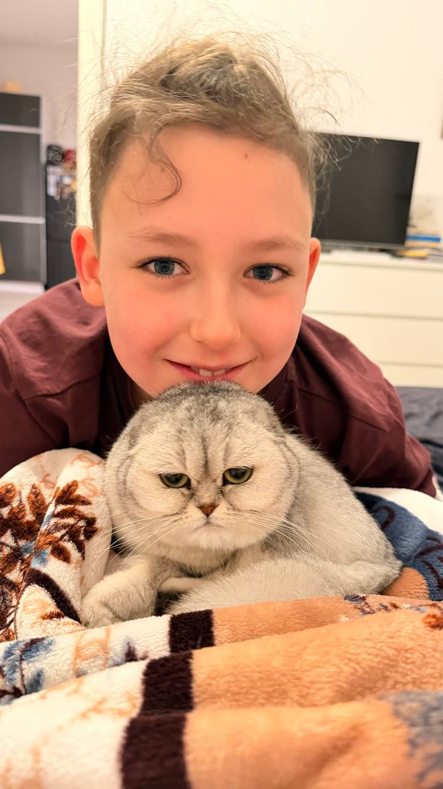
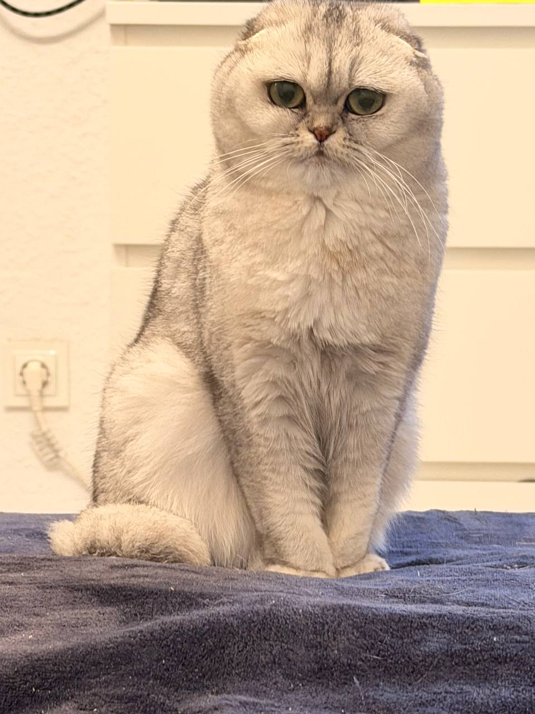
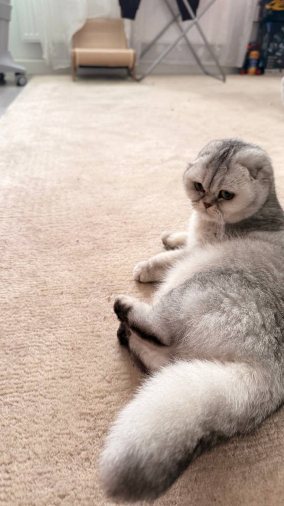
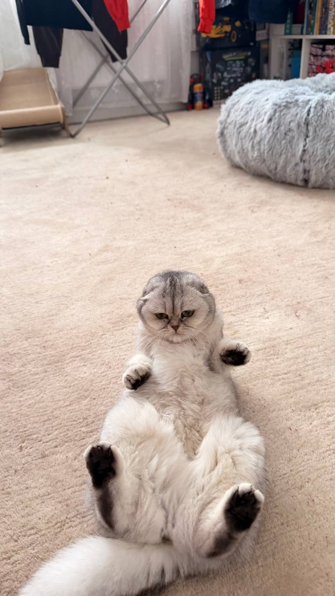
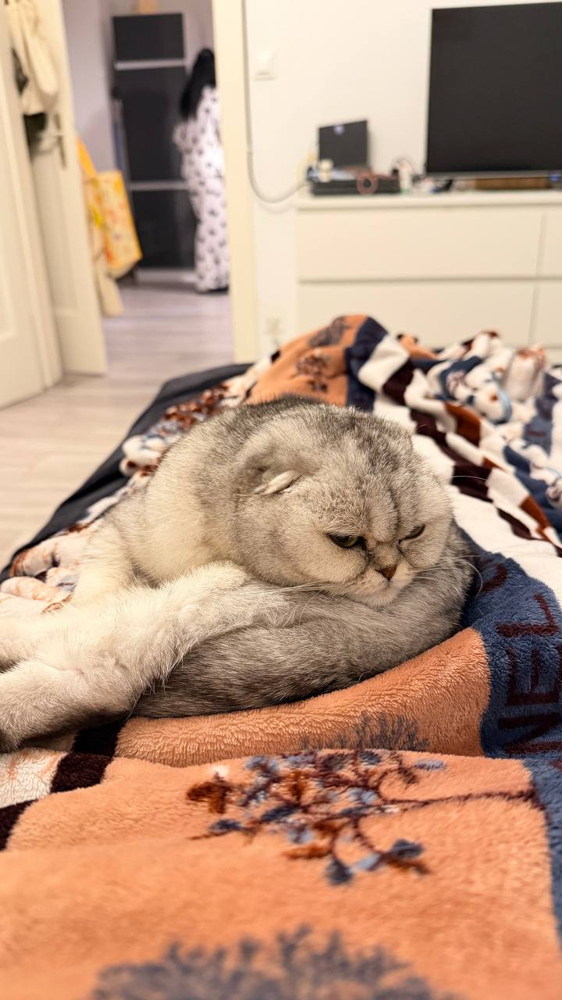

A small corner of the internet for cat people
Life is better
with a little purr.
Hi, I’m Felix. This is Luna, my lovely Scottish Fold, and a little guide to the things that help her feel happy, safe, and right at home.
Explore Luna’s care routineMade with love (and a few cat hairs)


Luna, being LunaA little introduction
Small paws.
Big personality.
Luna is a Scottish Fold with a playful spirit and a talent for making every day sweeter. The breed is known for its distinctive folded ears, first noticed in Scotland in 1961 on a cat named Susie.
“She makes even the quietest afternoon feel like something special.”— Felix, Luna’s human
Scottish Folds can be prone to cartilage and bone problems. Regular veterinary check-ups help keep Luna comfortable and healthy.
The everyday essentials
A happy cat starts here.
Little habits make a big difference. Here are a few ways I care for Luna every day.
-
01 / EVERY DAY
Good food, good mood
Offer balanced, high-quality food suited to your cat’s age and needs. A regular feeding routine can help create a reassuring rhythm.
-
02 / EVERY DAY
Fresh water, always
Refresh the water at least once a day, wash the bowl regularly, and keep it somewhere your cat can easily reach.
-
03 / A CLEAN SPACE
A tidy litter box
Scoop waste and clumps daily. Replace the litter and clean the box as needed, following the litter’s instructions.
Every cat is different. Ask your veterinarian for advice tailored to your cat’s health and routine.
The camera roll
A few of our favourite moments.
Soft naps, curious looks, and all the little things in between.



Good places to learn
A little more know-how.
For thoughtful, reliable guidance on feline health, behaviour, and everyday care.
- 01International Cat CareExpert advice on cat health, behaviour, and welfare.
- 02Feline Veterinary Medical AssociationVeterinary resources for feline health and wellbeing.
- 03Cornell Feline Health CenterResearch-informed information about feline health.
- 04RSPCA: Cat carePractical advice for caring for cats at home.
Just for fun
How well do you know Luna?
Two quick questions for fellow cat fans.